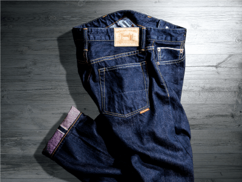

TOP
メイドイン津山とは
企業一覧
NEWS
メイドイン津山とは
企業一覧
TOP
□□□□□□□□□□□□□□□□□□□□□□□□□□□□□□
□□□□□□□□□□□□□□□□□□□□□□□□
□□□□□□□□□□□□□□□□□□□□□
□□□□□□□□□□□□□□□□□□□□□□□□□□□□□□□□□
□□□□□□□□□□□□□□□□□□□□□□□□□□□□□□
□□□□□□□□□□□□□□□□□□

NEWS
2019.9.20
メイドイン津山ファクトリー
ブランドフェア2019開催
2019.9.20
メイドイン津山ファクトリー
ブランドフェア2019開催
2019.9.20
メイドイン津山ファクトリー
ブランドフェア2019開催
メイドイン津山とは
技術と品質そしてデザインを兼ね備えた
津山ブランド。
長年の経験と高い技術を持った職人が丁寧に、
じっくり手間をかけて普段目にしない箇所までこだわり仕上げる「MADE IN TSUYAMA」製品。素材にも徹底的にこだわり、
厳選したものを使用しています。ものづくりへの真摯で妥協なき姿勢が確かで高品質な製品を生み出します。
紡ぐのは本物への熱き思い
高い技術と豊かな経験を持っているからこそ生み出せるものがある。
製品に関わることの全てを知っている者だけが生み出せるものがある。
ものづくりへの熱き思いが紡ぐ至高の製品だからこそ選んで欲しい。
確かな技術と
ものづくりへの思い
ものづくりへの熱き思いと真摯な姿勢、こだわりのデザインと素材、そして確かな技術が高品質な製品を生み出します。
自然に恵まれた津山
北部には黒沢山、広戸仙、那岐山へと続く美しい山並みと整った都市基盤がバランスした住みやすい街です。津山城（鶴山城）跡を中心に歴史的な街並みも特徴で、美作地域の産業・経済の中核として栄えてきました。
近年は、工業団地への企業立地により、内陸工業都市にも変貌を遂げてきています。農業・林業を中心とした第１次産業、そして豊かな自然を活かせる観光分野などの第３次産業も盛んになっています。中国地域のほぼ中心に位置し、神戸港まで２時間と各地にアクセスしやすいロケーションにより、高い技術力を持つ津山の製品が全国に日々届けられています。
メイドイン津山への思い
Vol.01 株式会社笏本縫製
プロダクトマネージャ／笏本達宏
純国産高級ネクタイブランド
「笏の音」誕生
Vol.02 有限会社内田縫製
代表取締役／内田政行
長く穿いて育てる、
津山発の“本物のジーンズ”誕生
Vol.03 有限会社末田工業所
代表取締役／末田 平
細部までこだわったバッグブランド
「ＫＯＲＯＫＵ（コロク）」の誕生
企業一覧
オリジナル ネクタイブランド／シャクノネ
ネクタイを専業として全国に高級ネクタイを提供してきた老舗縫製工場が2015年に立ち上げた自社ブランド。ネクタイが主張するのではなく、身に纏う人の魅力を引き立てるネクタイづくりを目指す。
オリジナル デニムブランド／内田縫製
津山市で、長年高級ジーンズの縫製を手掛けてきた老舗の工場。なかでも、オリジナルジーンズはシーンを選ばないシンプルで洗練されたデザインが特徴で、長く穿き込むほどに味わいが深まり、穿く人の個性を色濃く映した一本へと進化していく。
オリジナル バッグブランド／コロク
ハンドバッグ製造一筋に35年以上、独自の皮革製造加工で高級革等を使った製品を製造。素材を知り尽くし、見えないところまで丁寧に作り上げるバッグは機能的で美しく、使い込む程に馴染み、魅力が増す。
オリジナル ブランド／ニモナル
岡山県 北部の城下町津山市に拠点を構えるアウトドアショップ 「自然大好き！ニッチ・リッチ・キャッチ」が新しい発想で展開するオリジナル・アウトドアブランド。